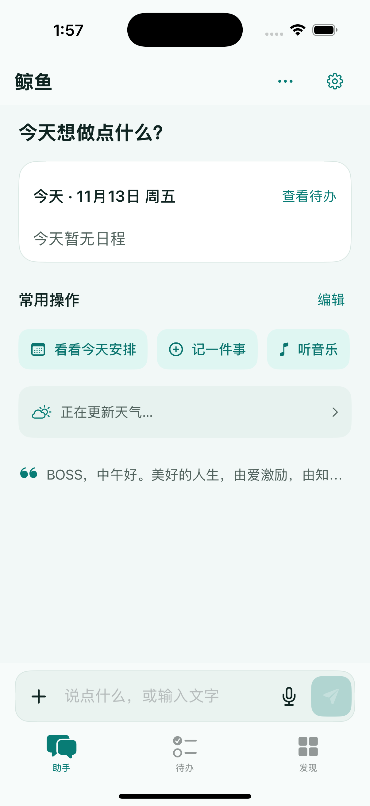
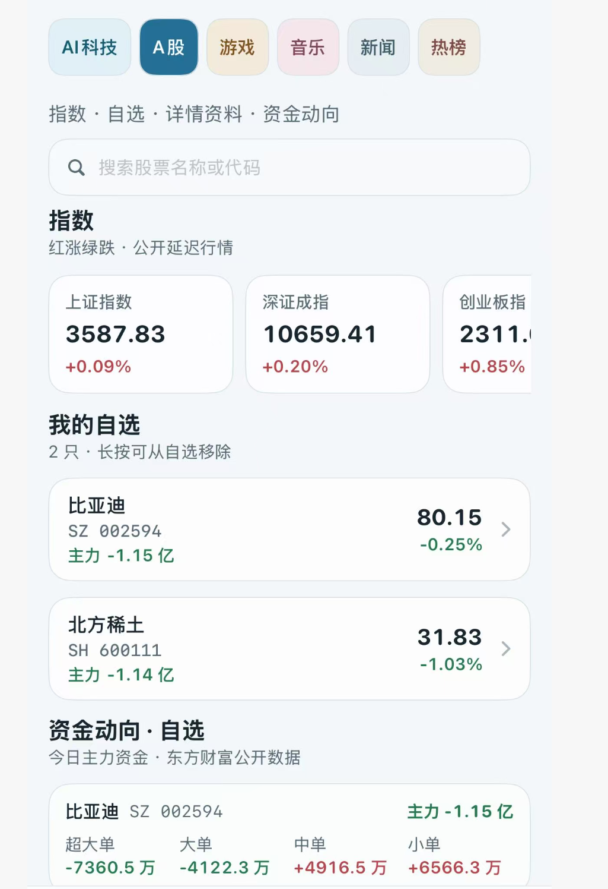
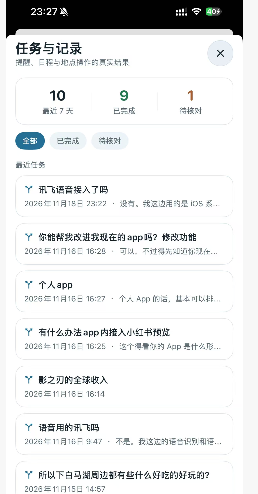
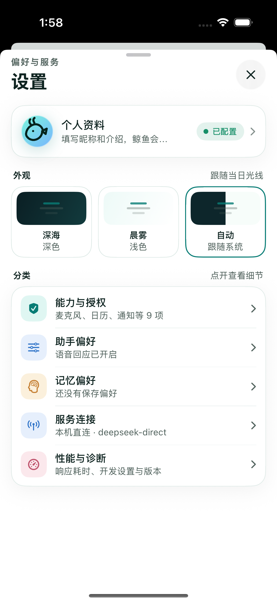
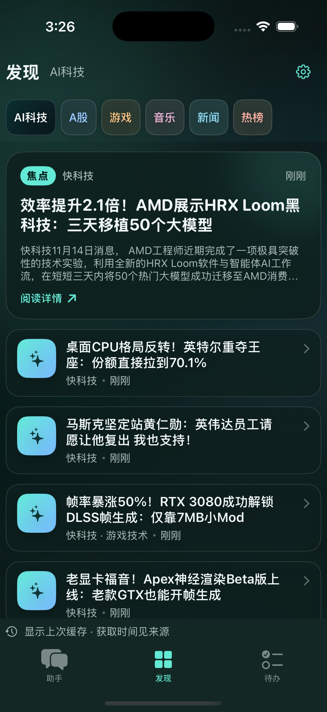

测试环境也是产品状态
构建注入讯飞配置后，“未配置”假设会变错。测试应该验证状态是否诚实，而不是依赖开发机恰好缺密钥。这一版做到哪里
这不是一份路线图。它是一个已经完成真实模型、真实语音接口、原生工具桥接和完整 IPA 构建的阶段记录。
鲸鱼把一次请求拆成可复核的执行轨迹：听见、理解、调用、确认、执行、记录与朗读。任一步没有真实结果，界面就不能把任务写成完成。
本轮最重要的变化，不是让回答多几个词，而是让 Agent 知道什么时候该用工具，什么时候该停下来问，什么时候只能承认数据没有取到。
阅读完整开发日志一个 Agent，四十项工具
版本 0.8.3 已通过 77 项单元测试，并完成 Arm64 IPA 构建。数字来自构建日志，不是产品宣传值。
0.8.3版本Build 143.1
1Agent有限步数、单一执行者
12Skill能力说明与工具边界
40Tool原生与联网能力
77单元测试0 失败
一次请求经过四层
先把声音变成确定文本。
讯飞 IAT 负责流式听写。中间结果只刷新界面；最终文本携带会话身份提交一次。动态修订按官方区间替换，不会误删后一句话。
再判断目标和风险。
DeepSeek 先拆解目标、缺项、实时数据需求和设备动作，再把请求收窄到相关 Skill。模型只能提出工具调用，不能直接取得系统权限。
然后由本地白名单执行。
Swift 原生工具路由负责参数校验、权限、确认策略、幂等与真实调用。写入提醒、日历、自选或记忆时，系统不会把模型文本当成授权。
最后留下可回看的证据。
每轮结果写入 TaskRecord，并保存原始用户消息 ID。记录页可以回到消息；旧记录按文字回退匹配，原对话不存在时明确说明。
- 输入 AVFoundation + 讯飞 采样、听写、最终确认
- 推理 DeepSeek + 规划器 任务、风险、Skill、工具
- 执行 NativeToolRouter 权限、确认、原生 Executor
- 结果 TaskRecord + 小露 持久记录与可读播报
十二组 Skill，不越权一步
Skill 不是插件市场，也不是能直接操作手机的权限包。它只说明何时使用、允许哪些 Tool、遇到什么情况必须停下。选择一个能力，查看它的真实边界。
点击左侧能力名称切换。这里的数量来自当前代码中的 AgentSkill.tools。
当前能力
9 项工具
日程与提醒
“明天下午三点提醒我取快递。”
理解时间生成预览用户确认EventKit 写入
修改或删除必须先取得记录 ID。写入生成预览，等待界面确认；未指定时间不会被模型擅自补齐。
允许的 Tool
create_reminder · list_reminders · update_reminder · delete_reminder · list_calendar_events · find_free_slots · create_calendar_event · update_calendar_event · delete_calendar_event





这一段怎样走完
从“回答很固定”开始，问题最终落到模型规划、语音协议、工具边界、测试环境和真机安装五个层面。
- 从 UI 进入真实工具0.7.20 → 0.8.0
海盐主题、分页手势、DeepSeek 多步规划、研究搜索与工具预算。
- 小露朗读锁定0.8.1
确定 `x4_yezi` 的请求参数并完成接口验证。
- 讯飞密钥进入加密构建0.8.2
CI 写入临时 Info.plist，打包后校验，公开 artifact 保持加密。
- 动态修订与交互缺口修复0.8.3
WPGS、长按朗读、记录回跳、中文游戏源、A 股模块和按压位置提示。
- 完整构建通过143.1
77 项测试、Release 归档、IPA 校验、Arm64 与讯飞字段检查全部成功。
这次真正学到的
跳转需要稳定身份
任务文字能帮助旧记录回退，但精确跳转必须保存消息 UUID。身份不存在时，界面也要说明原对话已被清空。反馈要靠近触发器
复制提示放在页面底部会输给安全区。把窗口坐标留给反馈层，用户才知道动作发生在哪里。接口成功不等于体验成功
WebSocket 握手、真实音频识别、TTS 返回、iOS 权限与扬声器播放是五个独立事实，不能互相替代。构建状态要分层解释
runner 未分配、Swift 编译失败、测试断言失败和签名失败都是不同问题。日志入口必须能定位到具体步骤。能力越多，边界越要具体
40 个 Tool 不构成智能。真正的智能来自选择正确能力、拒绝错误的工具、保留证据并在缺失信息时停下。交接边界
这里只写当前事实，不把模拟结果写成真机完成。
讯飞语音已经验证到什么程度？
真实账号已完成 IAT 音频识别测试，4.95 秒语音返回“今天天气怎么样？帮我看看下午的安排。”；TTS 也返回过有效音频。手机麦克风、蓝牙路由、打断和扬声器仍需最终安装后的真机体验确认。
为什么还说真机验收没有完全结束？
自动化测试和 IPA 校验能证明代码能编译、包内配置正确，但不能证明长按、朗读、权限弹窗和跳转在真实手指操作下都符合预期。最终包已生成，需按清单逐项安装验证。
Skill 和 Tool 有什么区别？
Skill 是业务能力范围和规则，Tool 是可执行的原生或联网动作。Agent 先选 Skill，再从该 Skill 允许的工具集合里提出调用；本地路由器仍然拥有最终执行权。
为什么没有拆成多 Agent？
当前任务规模不需要多 Agent。一个模型负责理解与编排，规划器和回答审查器提供有限辅助，原生工具执行器负责有副作用的动作。这样更容易追踪责任、控制循环次数和复现失败。
仓库已经分好工
现有文件保持原位，统一入口负责解释“什么是最新、什么是历史、去哪里找证据”。
ios原生 App、输入、执行器与 UI143 files
backend会话服务与接口测试43 files
contractsTool、事件和统一输入契约7 files
design设计演进、预览与验收图202 files
docs索引、开发日志与复盘3 files
integrations外部服务接入评估1 file
prompts助手系统提示词1 file
quality对话基准与质量资料3 files
release发布候选与产物说明4 files
review逐轮实施、截图和真机证据1011 files
webHTML 原型、展示页与复盘58 files
toolsIPA 注入、验证、构建与发布12 files
.github构建、测试、Pages 与加密产物8 files
0.8.3
- Build
- 143.1
- Source
- e457586
- Tests
- 77 passed
- Arch
- arm64
SHA256
f65ffb134d8c849c176f6f6f8f760a2b9d833c0b30c7b14579eba10fc504f318